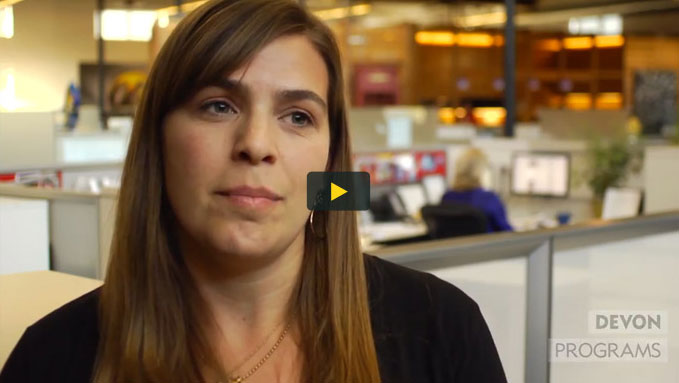

-

We’ve Invested $1.4 million to bring proven cancer support programs to 90 sites across the U.S. through the Community Impact Project
Investing, expanding and impacting through local partnerships
Community by community, we won’t stop. With our continued growing partnerships and Community Impact Project (CIP), we have been able to expand our reach and help raise already successful programs to the next level.
-
Just ask Devon from our Programs Department at the Foundation
CIP offers funding to organizations to replicate programs that have demonstrated success in supporting people affected by cancer within one city, state or region of the United States. Recreating programs that are proven to be effective has allowed us to eliminate the cost of developing new programs and allows for more immediate implementation to help cancer survivors and their families today—directly supporting our mission.
-
The 2012 Community Impact Project offered nearly $1.4 million in implementation awards to 90 selected applicants. This is the largest number of financial awards LIVESTRONG has granted in a single year in the 15-year history of the Foundation. The four chosen community programs were:
1
LIVESTRONG at the YMCA
Leader program engages volunteers around the world to serve and inspire cancer survivors. Within their local communities, Leaders promote LIVESTRONG’s navigation services, resources and other key programs; support our advocacy work around important policy and legislation; and fundraise. By supporting our priorities, developing relationships with community leaders and initiating their own activities, more communities and individuals are impacted by our mission and services.
Watch how Sam & Sandy have taken advantage of LIVESTRONG at the Y -
The 2012 Community Impact Project offered nearly $1.4 million in implementation awards to 90 selected applicants. This is the largest number of financial awards LIVESTRONG has granted in a single year in the 15-year history of the Foundation. The four chosen community programs were:
2
PILLARS4LIFE
Pillars4Life is a patient/caregiver support program that has been proven to enhance quality of life for cancer patients and allows hospitals and their social workers to more efficiently triage and attend to the psychosocial needs of a much greater number of patients.
-
The 2012 Community Impact Project offered nearly $1.4 million in implementation awards to 90 selected applicants. This is the largest number of financial awards LIVESTRONG has granted in a single year in the 15-year history of the Foundation. The four chosen community programs were:
3
The Creative Center
Hospital Artist-in-Residence ProgramSince 1994, The Creative Center has been dedicated to bringing the arts to people with cancer, chronic illness and through all stages of life as a way to help them discover their own creative resources while meeting the challenges of diagnosis, treatment and survivorship.
-
The 2012 Community Impact Project offered nearly $1.4 million in implementation awards to 90 selected applicants. This is the largest number of financial awards LIVESTRONG has granted in a single year in the 15-year history of the Foundation. The four chosen community programs were:
4
Advanced Certification for
Palliative CareThe Joint Commission's Advanced Certification for Palliative Care is designed to set standards and acknowledge hospitals providing state-of-the-art palliative care services that relieve symptoms and stress of serious illness and improve quality of life for patients.
-
We’ve expanded the "LIVESTRONG at the YMCA" program, which helps adult survivors of cancer transition into a healthy post-treatment life at 133 YMCA locations in 40 cities.
-
We’ve Impacted more than 184,000 students and teachers with the LIVESTRONG at School Program.
LIVESTRONG at School
The “LIVESTRONG at School” program continued to help students cope with and learn about cancer. We impacted more than 184,000 students and teachers in 2012. With one in three people in the U.S. facing a cancer diagnosis in their lifetime, children in classrooms everywhere are likely to be dealing with cancer right now. The LIVESTRONG at School curriculum offers online lessons for grades K–12 to help students about cancer in a way that is age-appropriate, inspiring and empowering.
Watch LIVESTRONG AT SCHOOL VIDEO